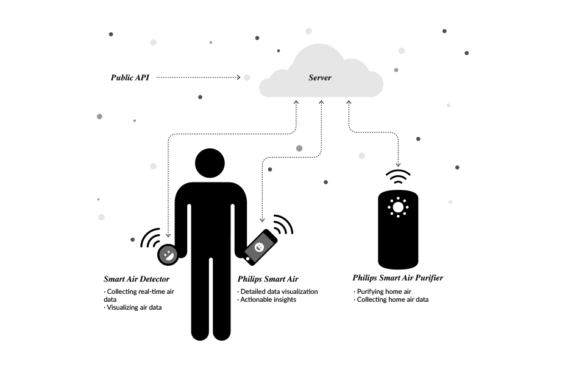
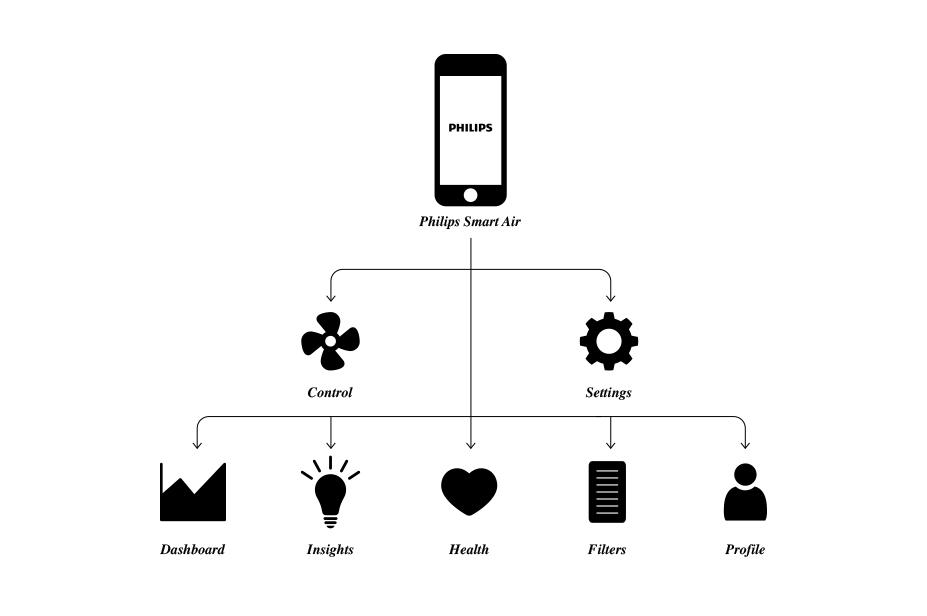
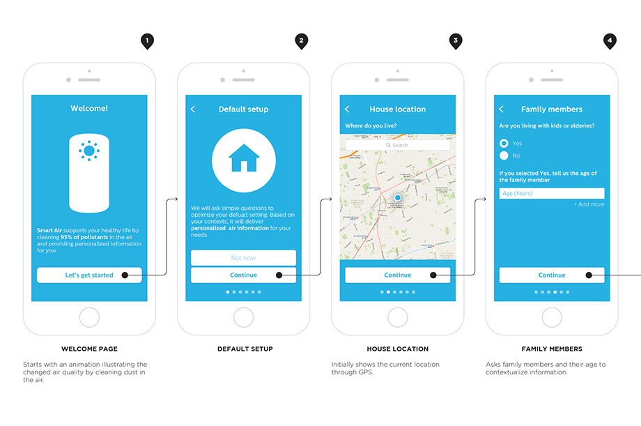
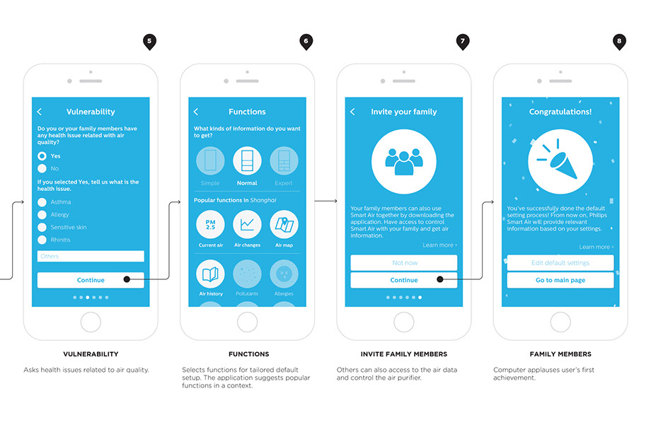
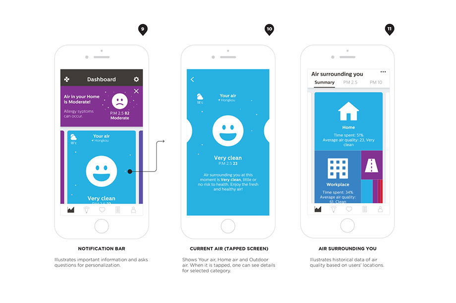
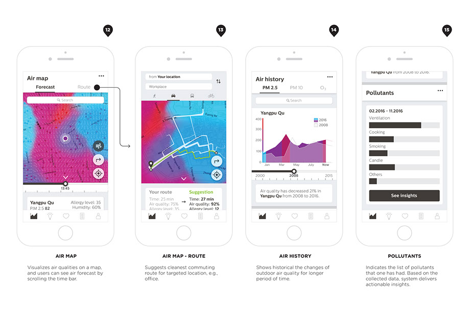

Visualizing Air Quality
Changing users’ behaviors regarding air quality
Designer: Jaeyong Lee
Roles: User Research, UX/UI design, Interaction design, Information Visualiziation
Partnership: Philips
This project is a design outcome of Master of Arts thesis: ‘Visual Communication for Behavior Change’, which aimed to find interconnections between visual communication design and behavior change by specifically focusing on people’s diverse motivations in the context of air quality. The partner of thesis was multinational company ‘Philips’, hence the study did a case study via Philips Smart Air Purifier. To effectively influence users’ behaviors in the context of air quality, the project proposed two concepts: Smart Air Detector – a data measuring device for real-time air quality and a renewed Philips Smart Air – mobile application.
You can also check the Master’s thesis presentation.


 Smart Air Detector and its animated emoticons
Smart Air Detector and its animated emoticons
Background
During the recent years, an increasing attention has been directed towards changing user behaviors and bringing long-term customer engagement through utilizing data from individual users. Considering that most of digital devices use visual languages as a main medium to communicate with users, deeper studies in the interconnection of visual communication design and behavior change has become necessary.
The Master of Arts thesis has investigated the role of visual communication design for behavior change of people who are differently motivated in the context of air quality. It has endeavored to bring forth fundamental understandings of human behavior and visual communication design by conducting desk and user researches and shift the findings into an empirical case study.
Design Concept
The study identified that being aware of a subject is the first step of change from the results of desk and user researches, so it built a design concept increasing the users’ awareness through visual communication to develop their motivational levels, which ultimately influence the behavior change. To concretely support the idea, it brought three auxiliary methods; 1) visualizing the invisible air qualities to enhance experience of users, 2) layering information structure to deliver context-relevant information, and 3) providing personalized functions and information to support users’ contextual differences.
Design Outcome

The final concept products consist of an air detector and a mobile application. With the Philips Smart Air Purifier, the concept products simultaneously work together to deliver real-time air data with doable insights and tailored information for motivating users constantly.
The air quality dat a can be measured and collected by the Philips Smart Air Purifier, Smart Air Detector and the public API. The air detector collects accurate air data anywhere people visit. The collected data sets are visualized in the Smart Air Detector as well as in the mobile application via persuasive visual languages, so that people can monitor things happening around them and do intended behaviors.
1. Smart Air Detector
Smart Air Detector on a bagThe Smart Air Detector is a data measuring device that collects real-time air data in any location in which people are standing. Users can freely carry it on their bag, clothe or their key ring and place it where they desire to. The device automatically measures the current air quality data, and users are allowed to freely access to it. The analyzed air quality is represented by visualizations: animated emoticons, colors and descriptive texts, on its digital screen.
 Smart Air Detetor in a context: Closed and opened window
Smart Air Detetor in a context: Closed and opened window
2. Renewed Philips Smart Air (iOS)
UI Design: renewed Philips Smart Air
The new proposal of a Philips Smart Air - mobile application, works together with the Smart Air Detector. When the Smart Air Detector collects air data and visualizes it on the product, the data also goes to the users’ mobile application, so that people can monitor details with more tailored and doable insights based on their contextual differences along with developing their own motivation constantly.
The prototype of the renewed Philips Smart Air is available at:
https://invis.io/5N7WX5HE7
App structure
The structure of the mobile application mainly consists of five menus: Dashboard, Insights, Health, Filters and Profile. Along with it, there is also a Control panel – allowing users to remotely control their air purifiers, and Settings – for adjusting to diverse options.
 Information structure of the appOnboarding process
One of my recent working experience was in Philips as a design intern. I have successfully worked in actual company projects: creating information visualizations for Primary Care Project and developing UI Design for Philips Online Shop Singapore website. The experience has allowed me to be a designer whom is confident working in new environment with international teams and creating design solutions for large-scale projects. After the experience, I am currently working on my master’s thesis with Philips: Visual Communication for Behavior Change, which will be finalized in the middle of November, 2016.
  Onboarding process: personalizationDashboard
Users could land to the main page consisting of different data visualizations after the onboarding process. Dashboard includes Notification Bar, Current Air and various Data Visualizations: Air Surrounding You, Air Map, Air History and Pollutants.
  DashboardInsights
Insights gives opportunities utilizing the collected data sets: from users, behaviors and environments, and transforms it to a doable behavior suggestion for individual users. Due to the complexity of understanding data visualization in the Dashboard, the Insights gives more understandable, actionable and digestible information to users.
Health
Health conveys health information reflecting from one’s contexts. To increase the credibility of the given health information, the information can be provided or supported by real-life doctors who can possibly work with Philips, and give more credible and authorized health information rather than simply providing common knowledge.
The Health also shows simulations of health effects depending on air qualities, time, and people. Users can freely adjust those options and can check the anticipated health effects with detailed descriptions.
Profile
Profile shows the registered personal and contextual information: home location, workplace, health vulnerability, family and so on. It constantly encourages users to invest their time and effort by visual stimuli: completion rate of one’s profile.
Control
Control allows users to remotely control their air purifier via smart phone with the visualization of the current home air quality. By the visualization sucking dust particles, users could visually see the process of air purification and the virtual result of it.
 Filter status, profile: personalization, and control
Filter status, profile: personalization, and control
3. Behavior changes
Designed interventions are explained via a persona’s story: Veera. Target behaviors the design examined was 1) open windows, 2) Blow out candles and 3) Wear a mask.
1) Open windows

Veera has an afternoon work shift in a coffee shop in Hongkou, Shanghai (1). The café usually is full of coffee aroma every day, and there are many customers in the place from morning until evening.
During her work, she sees that her Smart Air Detector on the wall shows vigilance emoticon: moderate air quality (2), so she opens the mobile application to check air quality of the place (3).
She sees that the indoor air quality in the café is moderate. As the application asks ‘where are you now?’, she pushes the ‘indoor’ button.
She sees a page of suggestions. She can check a simple description of the current air status, an air map showing the air quality of the nearby place and the changes of air quality in the café during 4 hours. Below that, she can see possible behaviors that she could consider to do. She thinks that she can probably open windows, since the application says that the current outdoor air quality is very good (PM 2.5 12).
When she reached the Open windows page, she could see a clear explanation how long time she needs to ventilate the air based on the outdoor air quality of the neighborhood (4). She understands that it is good to ventilate air for a while, and then she decides to open windows (5). She pushes the ‘Okay’ button.
Windows have been opened for 30 minutes, and the Smart Air Detector also shows a serenity emoticon (6). Since she was busy for doing her job, she could not see the changed emoticon on the device. Later, she found out that there is an unread message on the application. She opens the application, and it shows the message ‘Your air is clean now.’ It also asks possible reasons for the previous moderate air quality, and she thinks that it was because she did not do ventilation for a while. She selects ventilation as the reason, and the applications records the data. Application shows collected pollutants data, and guide her to more personalized insights.

 UX flow: open windows
UX flow: open windows
2) Blow out candles

Veera and her friends are invited for a dinner in her friend’s home (1). When the dinner starts, her friend uses candles as usual. Windows are closed, 4 people are in the living room area, and people are casually talking with each other. At some point, Veera can see her Smart Air Detector that attached on her bag shows the air quality is unhealthy (2). She also gets a mobile notification for the changed air quality, so she opens the application to check details (3).
She sees the apprehension emoticon, flying dust and purple color that arouse her attention. She chooses ‘indoor’ button to see suggestions that she could do in the situation. The application illustrates the current status in detail and possible behavioral suggestions.
Among different suggestions, she clicks ‘Remove pollutants’ button. She can see possible reasons of making unhealthy air quality, and find out that the candles could be a reason.
Since it is not her home, she hesitates to blow out candles
by her own decision. Instead of it, she talks to other friends that the air is unhealthy, and it could be because of the carcinogenic toxins from the burning candles (4). Other friends are interested in the topic and they start to talk about Veera’s Smart Air Detector. She has used the product for a month, so she can explain how it works, and what she can do in those kinds of situations. At the end, Veera and her friends decide to blow out the candles and ventilate the air for a while (5).
After having dinner, Veera can see that the application asks the reason for the unhealthy air quality that is turned to clean status (6). As she anticipates, she chooses ‘Candle’ as the possible reason, the system applauses her contribution, and it collects the data for making other insights.

 UX flow: blow out candles
UX flow: blow out candles
3) Wear a mask

In the morning, Veera wakes up and checks her phone on her bed. She sees a message from Philips Smart Air Purifier application, which says that the air quality is going to be very unhealthy for today in Shanghai (1).
She opens the application and checks the details about the air forecasting. When she notices an emoticon wearing a mask with dense dust particles with red background color in the application, she almost feels fear for the situation (2). The application indicates that the air quality would be very unhealthy from 08:00 to 20:00, with a maximum of PM 2.5 level 355.
The application shows an air map and a bar graph; Veera could
check the anticipated changes of outdoor air quality by time, and suggestions that she can consider. Veera checks the first suggestion – ‘Prepare air pollution mask’. The application explains the possible influences of the unhealthy air quality on her body and different types of air pollution masks that she can use.
She already puts her mask on her face before going out, and tries to not take it off until arriving at the school. When she goes out, the city was dark and dim, and she can see many people were wearing masks on the road (3). When she gets in a bus stop, her mobile notifies that her Smart Air Detector analyzes the current air quality in the location, and it is very unhealthy. The application suggests to her wearing a mask immediately, and she answers that she already wears it. It applauses her proactive behavior with a ‘Great’ message and a thumbs up icon.
After arriving in the school, she thinks that she might talk about this unhealthy air quality and its health impact to her friends who do not care it very much, since she regards it as a very important issue for everyone (4).
Around 20:00, she checks outdoor air quality before heading back to her home. The application says that the outdoor air quality is clean now (5). Now she feels relieved, and goes to home without the mask (6).

 UX flow: Wear a mask
UX flow: Wear a mask